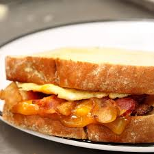
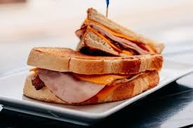
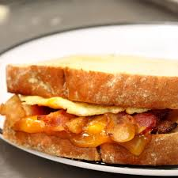
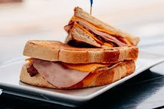
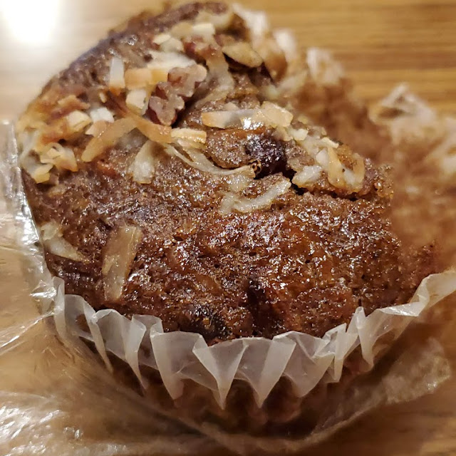
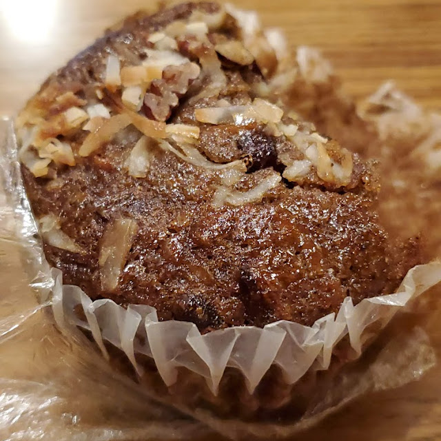

One stop to Tate Street
Looking for places around Petty building for a dine in experience?
Look no further—I've explored every restaurant on Tate Street that's truly worth your time and money. As someone new to Greensboro, I’ve found that one of the best ways to understand a city’s vibe is through its food. Every bite reveals something about the culture, the people, and the heart of the community. From cozy coffee shops to buzzing local eateries, I’ve made it a mission to uncover the hidden gems. Whether you’re craving bold flavors, big portions, or a welcoming atmosphere, this guide is for you. If you love quality food with great value, keep reading—you’re in for a delicious journey.
Top Chicken Spots in Town
- Tates Street Coffee House – casual bites with artistic vibes
- Crazy Mexico – spicy chicken tacos you’ll crave daily
- Coffeology – underrated chicken wraps + amazing espresso
Coffeology
📍 Located right on Tate Street, Coffeology is a student-favorite known for its cozy atmosphere and creative drink menu. Open daily from 7 AM to 6 PM, it’s the perfect spot for study sessions, coffee dates, or a quiet meal. Their food is fresh, flavorful, and always served with a smile. Don't miss their underrated hot meals and top-tier espresso drinks.
 



Tate Street Coffee
📍 Nestled in the heart of campus, Tate Street Coffee House is a local institution that’s been serving students and locals alike for years. Known for its eclectic art, mellow vibes, and strong espresso, it’s a perfect study spot or chill hangout. Open daily from 6:30 AM to 9 PM, they offer more than just great coffee — their food is simple, fresh, and satisfying.
 


Crazy Mexico
📍 Nestled in the heart of campus, Tate Street Coffee House is a local institution that’s been serving students and locals alike for years. Known for its eclectic art, mellow vibes, and strong espresso, it’s a perfect study spot or chill hangout. Open daily from 6:30 AM to 9 PM, they offer more than just great coffee — their food is simple, fresh, and satisfying.